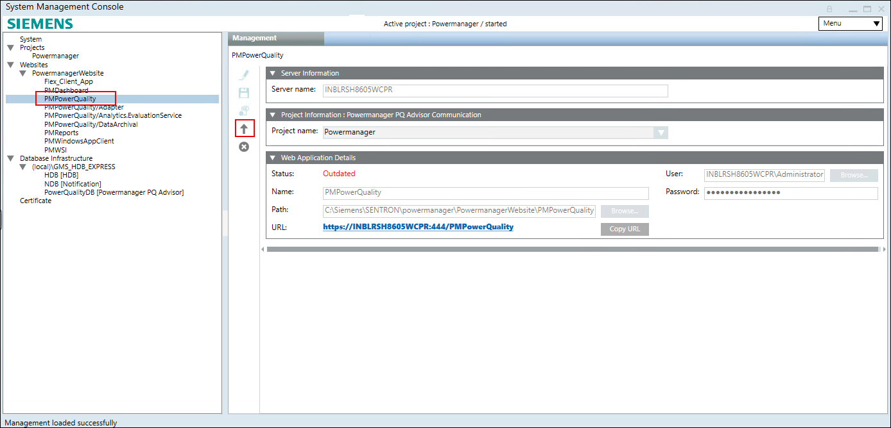
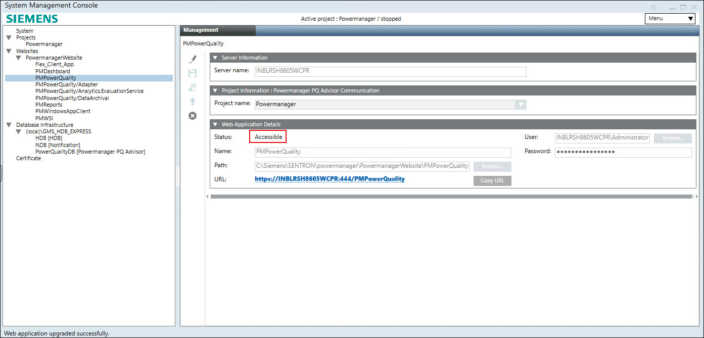

Additional PQ Advisor Web Application procedures
This section provides additional procedures related to the PQ Advisor Web Application in Powermanager.
Upgrading PQ Advisor Web Application
If you upgrade the Powermanager to the latest version from an earlier version and are using PQ EM’s, check whether the PQ Advisor Application upgrade button is enabled in SMC. If it is enabled, click the Upgrade button to upgrade the PQ Advisor Application.
Perform below steps to upgrade the PQ Advisor Web Application after upgrading Powermanager from earlier version to the latest version.
- Open Powermanager SMC application.
- Click on [PQ Advisor Web Application].

- Click upgrade icon.
- A message displays.
- Click OK.

- The PQ Advisor Web Application is upgraded successfully.

NOTE: If you upgrade the Powermanager to the latest version from an earlier version and are using PQ EM’s, the status of the sub–PQ Advisor Web Applications will be Outdated.
To changes the status of sub–PQ Advisor Web Applications, navigate to the PQ Advisor Application, click Edit, and then click Save without modifying anything. Repeat this process to update the status for all the created sub-applications.